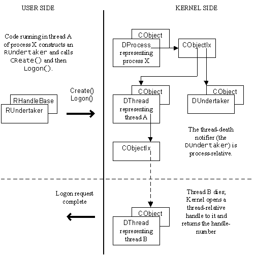

|
| |
To use a thread-death notifier, a thread which needs to know about the death of other threads:
constructs an RUndertaker handle and then calls its
Create() member function to create the associated Kernel side
object. The RUndertaker handle is
process-relative which means that the handle is
not closed if the requesting thread dies.
issues a notification request to the thread-death notifier,
passing a reference to a TRequestStatus object and a reference to
a TInt.
When any other thread dies, the requesting thread's
request semaphore is signalled to indicate that
the notification request is complete. The TRequestStatus object
supplied by the requesting thread is set to KErrDied.
In addition, the Kernel opens a local thread-relative handle on the
dying thread. (thread-relative, here, means relative to the requesting thread)
and sets the TInt, supplied by the requesting thread, to the
resulting handle-number. The requesting thread can construct an
RThread from this handle-number. The following diagram helps
visualise the situation.

The following code fragments demonstrate this:
{
...
RUndertaker the_undertaker;
TRequestStatus the_status;
TInt the_dyingthread_handle_number;
...
the_undertaker.Create();
the_undertaker.Logon(the_status,the_dyingthread_handle_number);
User::WaitForRequest(the_status);
...
...// prepare for a long wait
...
RThread r;
r.SetHandle(the_dyingthread_handle_number);
...
...// Now have an open thread-relative handle to the
...// dying thread so we can, for example, ...
if (r.ExitReason()==0x666)
{
...
}
...// We have an open handle on the dying thread; the dying thread
...// remains in existence until we close it.
r.Close();
...
}
In practical code, an RUndertaker is used by an active
object.
The RUndertaker handle also offers a
LogonCancel() function. Calling this function, causes the
requesting thread's request semaphore to be
signalled and any wait to complete. The TRequestStatus is set to
KErrCancel.
This technique of using an RUndertaker is not guaranteed
to report the death of all threads. In particular, if a second thread dies
while a requesting thread is handling the request completion due to the death
of a first thread (but before it can make another notification request), the
death of this second thread will go unnoticed.
Copyright ©2002 Symbian Ltd. 6.1-00174 |
|